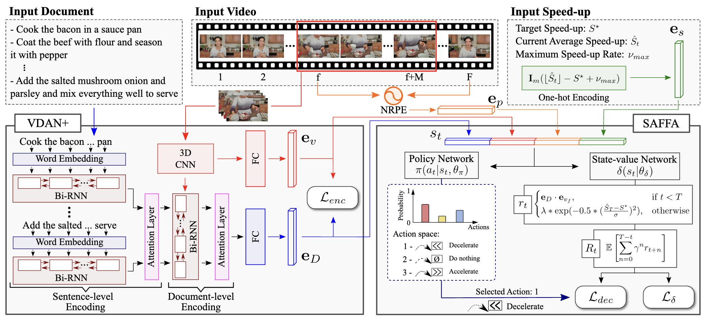

Edson Araujo
I'm a PhD Student at Goethe University Frankfurt, working with Prof. Hilde Kuehne. Our work is part of the MIT-IBM Watson AI Sight and Sound Project, through which we work with several researchers on multi-modal learning.
I did my Master's in Computer Science at UFMG under the supervision of Prof. Erickson Nascimento, period in which I was able to collaborate in different research topics such as video summarization and image descriptors.
CV / Scholar / Twitter / Bluesky / Github
Email: [last_name] at uni-frankfurt.de
🔥 News
05.2025 CAV-MAE Sync is also going to be presented at the LatinX, MMFM and Sight and Sound Workshops at CVPR 2025!
02.2025 CAV-MAE Sync was accepted to CVPR 2025 as a poster presentation.
10.2023 I joined a PhD Program under the supervision of Prof. Hilde Kuehne
05.2023 I defended my Master Thesis on "An Audiovisual Approach for Video Summarization Using Psychoacoustic Features"
Research
I'm interested in multimodal learning, self-supervised methods and audiovisual representation learning. Some papers are highlighted.
Selected Publications

|
CAV-MAE Sync: Improving Contrastive Audio-Visual Mask Autoencoders via Fine-Grained Alignment
Edson Araujo, Andrew Rouditchenko, Yuan Gong, Saurabhchand Bhati, Samuel Thomas, Brian Kingsbury, Leonid Karlinsky, Rogerio Feris, James R. Glass, Hilde Kuehne CVPR, 2025 Project Page / Code / arXiv We improved audio-visual learning by treating audio as a temporal sequence aligned with video frames instead of global representations, and by separating competing objectives with dedicated tokens. Our approach outperforms more complex architectures on retrieval, classification, and localization tasks across multiple datasets. |
|  |
Text-Driven Video Acceleration: A Weakly-Supervised Reinforcement Learning Method
Washington Ramos, Michel Silva, Edson Araujo, Victor Moura, Keller Oliveira, Leandro Soriano Marcolino TPAMI, 2023 Project Page / Code / arXiv This paper introduces a novel weakly-supervised reinforcement learning method to accelerate instructional videos using text, addressing limitations of current summarization techniques. The proposed approach uses a new joint reward function and the Extended Visually-guided Document Attention Network (VDAN+) to effectively control video length while achieving state-of-the-art performance. |

|
Straight to the Point: Fast-Forwarding Videos via Reinforcement Learning Using Textual Data
Washington Ramos, Michel Silva, Edson Araujo, Leandro Soriano Marcolino, Erickson Nascimento CVPR, 2020 Project Page / Code / arXiv This paper presents a novel reinforcement learning methodology to accelerate instructional videos by adaptively selecting and removing irrelevant frames, addressing visual gaps in traditional summarization. The approach utilizes a textually and visually oriented agent with a new Visually-guided Document Attention Network (VDAN) for creating shorter, coherent videos and achieves state-of-the-art F1 score and segment coverage. |

|
Personalizing Fast-Forward Videos Based on Visual and Textual Features from Social Network
Washington Ramos, Michel Silva, Edson Araujo, Alan Neves, Erickson Nascimento WACV, 2020 Project Page / arXiv This paper introduces an approach for automatically creating personalized fast-forward videos from First-Person Videos (FPVs) by leveraging text-centric data from a user's social networks to infer their topics of interest. The method assigns scores to input frames based on user preferences and significantly outperforms competitors in F1 score, with its effectiveness demonstrated through extensive experiments and a user study. |

|
On Modeling the Effects of Auditory Annoyance on Driving Style and Passenger Comfort
Edson Araujo, Michal Gregor, Isabella Huang, Erickson R. Nascimento, Ruzena Bajcsy IROS, 2019 Paper This study investigates the impact of acoustic annoyance on drivers in real-world scenarios, revealing significant differences in driving styles and presenting an online classifier that detects driver annoyance from inertial measurements with 77% accuracy. While empirically confirming a passenger dynamics model using pressure mat data, the study couldn't establish a change in self-reported passenger comfort due to acoustically induced driving styles not being sufficiently distinct. |
Design and source code from Jon Barron's website